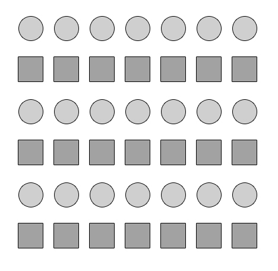
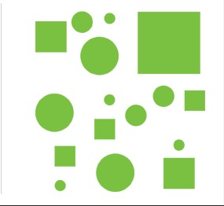

Beispiel 1
Beispiel 1 verdeutlicht dieses Gesetz. Zum einen die einzelnen Kreise und Quadrate wenden dieses Gesetz in ihrer Form an, die sich wiederholt. Aber auch die einzelnen „Streifen“ die sich in Quadraten und Kreisen abwechseln verdeutlichen, dass diese Elemente gruppiert werden.


Beispiel 3
In Beispiel 3 ist eine Ähnlichkeit sehr schwer zu erkennen. Es gibt zwar Formen die sich wiederholen. Da aber viele verschiedene Formen durcheinander zu sehen sind, wird hier das Gesetz der Ähnlichkeit sehr schwer wahrgenommen.